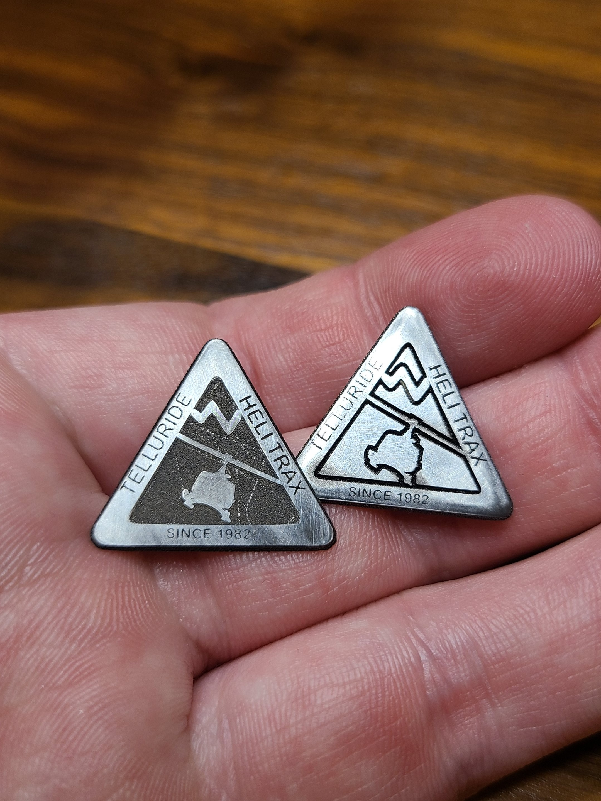

Project Inspiration
I collect pins from every place I go skiing. I had the opportunity to go helicopter skiing in February 2023, but they did not have any pins I could buy to commemorate the trip. I had to make my own.
Initial Phase
I decided to use the logo of the helicopter skiing business, HeliTrax.
Cutting a 0.95 mm piece of stainless that I got for a steel with a 50W Galvanometer fiber laser that runs at 1064nm wavelength.
I gained a lot of practice polishing pins.

There is an imposter among us. My homemade pin fits in perfectly with all its store bought brothers and sisters.